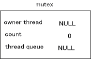
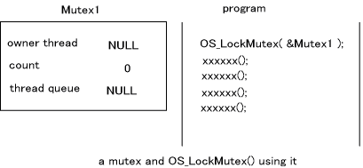
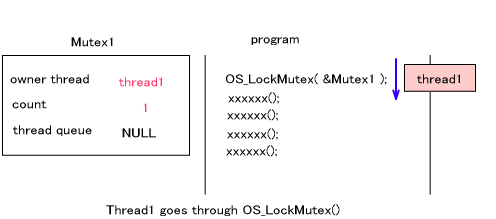
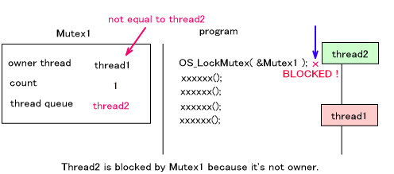
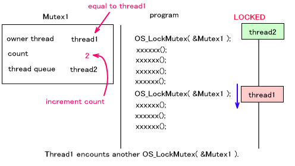
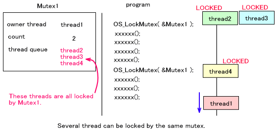
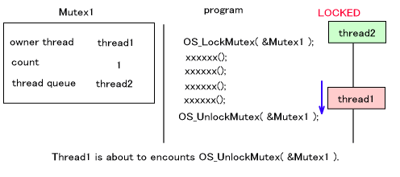
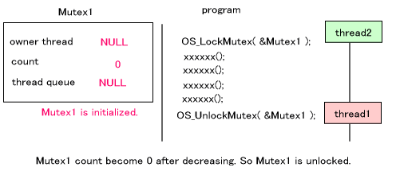
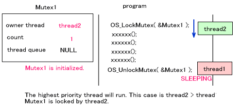
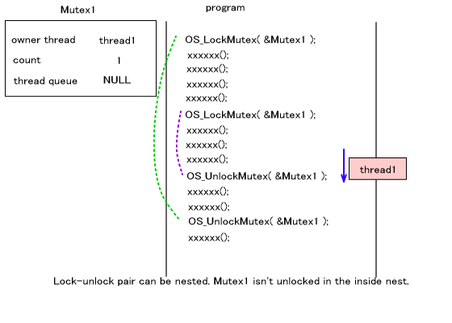

Mutex (mutual exclusion (service)) is a mechanism for exclusion control among threads. For particular program locations, this mechanism curbs simultaneous execution from multiple threads and sees that resources such as data and registers are not accessed simultaneously from multiple threads.
Initializing Mutex
Mutex is initialized with OS_InitMutex()
The Mutex Structure
The OSMutex structure is as follows:
struct OSMutex
{
OSThreadQueue queue;
OSThread* thread; // the current owner
s32 count; // lock count
OSMutex* prev; // link for OSThread.queueMutex
OSMutex* next; // link for OSThread.queueMutex
};
|
Of these, prev and next are arguments for management of the mutex list structure. The queue, thread, and count arguments perform the actual mutex functions.
queue is the thread queue where the thread that is being made to wait by mutex is registered.
thread is the argument which registers the current thread that is locking other threads with this mutex.
count is the argument that manages the lock nest for this mutex.
Each argument takes the value indicated below when initializing mutex.

Locking Mutex
The lock function preformed by mutex is OS_LockMutex()
If OS_LockMutex() is called in a program and the designated mutex is not being used in a lock at that point in time, OS_LockMutex records and locks the current thread.
If a OS_LockMutex()
For example, consider the figure below when there is a Mutex1 and a program which uses it for locking.

thread1 attempts to execute this program. thread1 executes the mutex lock function OS_LockMutex( &Mutex1 ), but since Mutex1 has not yet been used, thread 1 is recorded as the Mutex1 owner thread, the count is set to 1, and the program returns from the lock function. (The determination of whether Mutex1 has been used is based on whether the Mutex1 owner thread is NULL.)

Next, consider what happens when a separate thread, thread2, attempts to execute the same program. thread2 runs OS_LockMutex ( &Mutex1 )mutex1 is already being used in a lock. Since thread2 is not the mutex1 owner thread, thread2 cannot proceed any further. As a result, thread2 goes into a pause state. At this point, thread2 is registered inside the mutex1 thread queue as waiting for this lock to be released.

Now consider a case where thread1 once again runs OS_LockMutex ( &Mutex1 )mutex1 is already being used in a lock, but the mutex1 owner thread is the same as the current thread (thread1), so it can be bypassed. When this happens, the mutex1 count increments.

There are also times when multiple threads are registered in a single mutex thread queue. These threads are all locked by that mutex. However, it is not necessarily the case that all threads are in a pause state on the same line. If the mutex is unlocked, all registered threads will go into an executable state.

Unlocking Mutex
The function used for unlocking with mutex is OS_UnlockMutex().
However, unlocking does not always occur. The unlocking only takes place when the decremented count value inside the mutex is zero. When the count value is not zero, that value is simply decremented, and control is returned from the function.
For example, consider the case in the figure below where thread1 runs OS_LockMutex ( &Mutex1 )thread1 is in a state where it is using mutex1 to lock thread2.

At this time, the count has been decremented to zero, so the thread registered in the thread queue is put into an executable state and is re-scheduled. In this case, thread2 goes into an executable state.

If the priority of thread2 is higher than that of thread1, thread1 enters a pause state and thread2 goes into an executable state. Therefore, thread2 attempts to execute OS_LockMutex( &Mutex1 )thread1. However, Mutex1 is initialized so this time thread2 will use Mutex1 to lock other threads.

When thread1 runs OS_UnlockMutex()

Attempting to Lock Mutex
Until there is a lock, OS_LockMutex()OS_TryLockMutex()
With OS_TryLockMutex()
When the Thread Ends...
When the thread ends, every mutex locking that thread is unlocked.
Overview of OS Functions (Exclusion Control)
12/14/2004 Corrected typos
11/11/2004 Initial version
CONFIDENTIAL